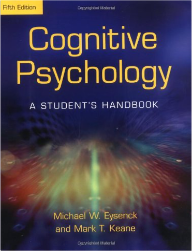

Exercises in Helping Skills for Egan's The Skilled Helper, 9thGerard Egan Exercises in Helping Skills for Egan's The Skilled Helper, 9thGerard Egan  Written by Gerard Egan, with assistance from Rich McGourty, this manual parallels the main text, THE SKILLED HELPER, Ninth Edition. The manual allows students to complete self-development exercises as well as practice communication skills and each of the steps of the model in private before using them in actual face-to-face helping interactions with others.  The Skilled Helper: A Problem-Management and Opportunity-Development Approach to HelpingGerard Egan The Skilled Helper: A Problem-Management and Opportunity-Development Approach to HelpingGerard Egan Emphasizing the collaborative nature of the therapist-client relationship, THE SKILLED HELPER is internationally recognized for its successful problem-management and opportunity development approach to effective helping, using a practical, three-stage model. In this new ninth edition, Egan continues to build upon the "positive psychology", solution-focused theme by adding insightful new discussions on evidence-based practice, research, and philosophical perspectives. Research Methods in PsychologyDavid G. Elmes, Barry H. Kantowitz, III Henry L. Roediger Using contemporary examples from primary sources, RESEARCH METHODS IN PSYCHOLOGY, Eighth Edition encourages students to become engaged in the basics of scientific investigation through an example-based approach. This text displays the authors' commitment to ensuring that the student has a thorough understanding of the research process from the very beginning. Highly readable, it avoids the heavy statistical tone that some introductory students find difficult to understand. Rather, it is conceptually driven to offer students a big picture view of the experimental approach to research. Empirical examples and applications are consistently used throughout to foster critical thinking skills. In many chapters, a unifying empirical example at the beginning of the chapter is cited throughout the chapter to help clarify terms or design problems. By presenting concepts with concrete examples, the text aids students in applying related ideas to their areas of research interest. Cognitive Psychology: A Student's Handbook 5th EditionMichael W. Eysenck, Mark T. Keane This fifth edition of the best-selling international cognitive psychology textbook has been substantially updated and restructured to reflect new developments in cognitive psychology, and made more student-friendly.  Darkness at SethanonRaymond E Feist Darkness at SethanonRaymond E Feist An evil wind blows through Midkemia. Dark legions have risen up to crush the Kingdom of the Isles and enslave it to dire magics. The final battle between Order and Chaos is abotu to begin in the ruins of the city called Sethanon.  MagicianRaymond E Feist MagicianRaymond E Feist Raymond E. Feist's classic fantasy epic, Magician, has enchanted readers for over twenty years. The revised edition was prepared to celebrate the tenth anniversary of its publication, and incorporates over 15,000 words of text omitted from previous editions. At Crydee, a frontier outpost in the tranquil Kingdom of the Isles, an orphan boy, Pug, is apprenticed to a master magician — and the destinies of two worlds are changed forever. Suddenly the peace of the Kingdom is destroyed as mysterious alien invaders swarm the land. Pug is swept up into the conflict but for him and his warrior friend, Tomas, an odyssey into the unknown has only just begun. Tomas will inherit a legacy of savage power from an ancient civilization. Pug's destiny is to lead him through a rift in the fabric of space and time to the mastery of the unimaginable powers of a strange new magic.  SilverthornRaymond E Feist SilverthornRaymond E Feist This is the second volume of Raymond E. Feist's great epic of heroic fantasy. For nearly a year peace reigned the enchanted kingdom of Rillanon. But new challenges awaited Arutha the Prince of Krondor when Jimmy The Hand - youngest thief in the Guild of Mockers - came upon a sinister Nighthawk poised to assassinate him. What evil power raises the dead and makes corpses do battle with the living at the behest of the Guild of Death? And what high magic can defeat it? The new King of Midkemia is threatened - and a life-or-death quest must be undertaken for an antidote to a poison that fells a beautiful Princess on her wedding day! "The best new fantasy concept in years! Has a chance of putting its author firmly on the throne next to Tolkein - and keeping him there" - "Dragon". "Epic scope! vivid imagination!a significant contribution to the growth of the field of fantasy" - "Washington Post". Krondor: The AssassinsRaymond E. Feist The second instalment of The Riftwar Legacy, Assassins reveals Feist at his storytelling best. There is intrigue, humour and breakneck action aplenty here from the undisputed master of epic fantasy. Fresh back from the front, another foe defeated, Prince Arutha arrives to find all is not well in Krondor. A series of apparently random murders has brought an eerie quiet to the city. Where normally the streets are bustling with merchants and tricksters, good life and night life, now there seems to be a self-imposed curfew at sundown. Mutilated bodies have been turning up in the sewers, the Mockers' demense. The Thieves' Guild has been decimated - men, women, children, it matters not. The head of the Mockers is missing, presumed dead. Those few who survived the terrible attacks are lying low. Very low. The Crawler, it seems, is back in town. And he's being helped by others, more ruthless than he. Can it be the Nighthawks again? The Prince enlists his loyal Squire James to find out. If anyone can unravel what's happening in the bowels of Krondor, he can. He knows the sewers like the back of his hand. Afterall, as Jimmy the Hand, he grew up there. Meanwhile, the retinue of the Duke of Olasko has arrived suddenly at the palace, a week ahead of schedule but with no apologies and many demands. They say they are here to hunt. But to hunt what. Pug's son William, on his first posting as a knight-lieutenant, must escort them into the wilds. It should have been a straightforward mission...  Development Across the Life SpanRobert S. Feldman Development Across the Life SpanRobert S. Feldman This chronologically organized book provides readers with a broad overview of the field of human development–from the moment of conception through death–focusing on physical, cognitive, and social and personality development. Appealing to individuals with a myriad of different backgrounds and future goals, this book offers the most current, balanced coverage of theory and research. A wide variety of chapter topics includes gene therapy; brain development, post-partum depression; child care effects; home schooling; cognitive developments, stability of personality; cultural approaches to development, and attitudes toward aging and length of life. For a better understanding of the experiences of life and development of humans. |


 Made with Delicious Library
Made with Delicious LibrarySpringfield, State zipflap congrotus delicious library Doddridge, Edward